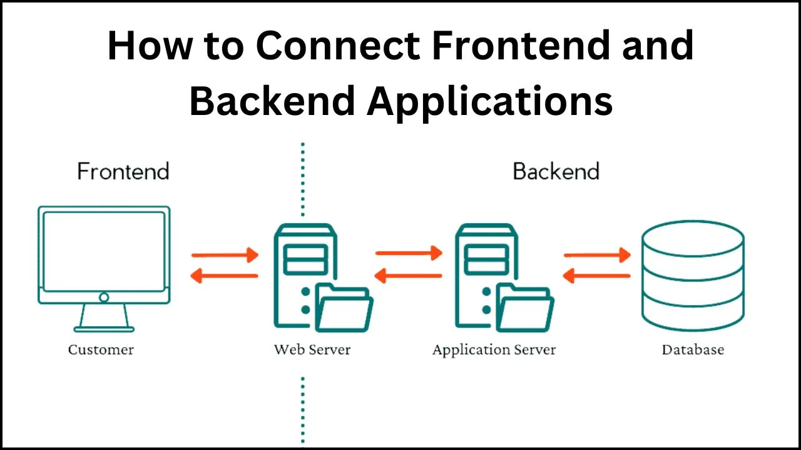
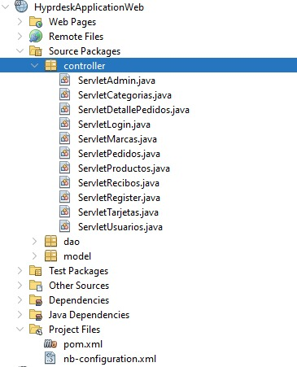

Backend: pom.xml, DAO, Servlet, Maven y EJB
El backend es el núcleo de tu aplicación. Aquí se implementa la lógica de negocio, la seguridad, la validación de datos y la interacción con la capa de persistencia. En una arquitectura Java EE con Maven, esta capa suele incluir Servlets, DAOs, EJBs y la configuración necesaria en el pom.xml.
Arquitectura del Backend

La capa de backend recibe las peticiones del frontend, las procesa mediante reglas de negocio y comunica con la base de datos o sistemas externos antes de devolver la respuesta.
⚙ Configuración de Maven (pom.xml)
En el pom.xml se definen las dependencias necesarias para que el backend funcione correctamente. Ejemplo mínimo para trabajar con Servlets y EJB:
<dependencies>
<dependency>
<groupId>javax.servlet</groupId>
<artifactId>javax.servlet-api</artifactId>
<version>4.0.1</version>
<scope>provided</scope>
</dependency>
<dependency>
<groupId>javax.ejb</groupId>
<artifactId>javax.ejb-api</artifactId>
<version>3.2</version>
<scope>provided</scope>
</dependency>
</dependencies>
Servlets
Un Servlet procesa solicitudes HTTP y genera respuestas dinámicas. Es la pieza central para manejar la comunicación cliente-servidor.
@WebServlet("/saludar")
public class SaludoServlet extends HttpServlet {
protected void doGet(HttpServletRequest request, HttpServletResponse response) throws IOException {
response.setContentType("text/html;charset=UTF-8");
response.getWriter().println("<h1>¡Hola desde el Servlet!</h1>");
}
}
DAO (Data Access Object)
El patrón DAO encapsula la lógica de acceso a datos, permitiendo que la lógica de negocio esté separada del código de persistencia.
public class UsuarioDAO {
private EntityManager em;
public UsuarioDAO(EntityManager em) {
this.em = em;
}
public void guardar(Usuario usuario) {
em.getTransaction().begin();
em.persist(usuario);
em.getTransaction().commit();
}
}
EJB (Enterprise JavaBeans)
Los EJB son componentes del lado del servidor que implementan la lógica de negocio. Pueden ser Stateless (sin estado) o Stateful (mantienen estado entre llamadas).
@Stateless
public class ServicioUsuarioEJB {
@PersistenceContext
private EntityManager em;
public Usuario obtenerPorId(long id) {
return em.find(Usuario.class, id);
}
}
Flujo de Ejecución del Backend
- El usuario envía datos desde el frontend (formulario o petición AJAX).
- Un Servlet recibe la petición y valida la información.
- El Servlet llama a un EJB o DAO para procesar los datos.
- El DAO se comunica con la capa de persistencia.
- El resultado se envía de vuelta al Servlet.
- El Servlet devuelve la respuesta al cliente.
Ejemplo de un Servlet que usa un EJB
Este ejemplo demuestra cómo un Servlet inyecta y utiliza un EJB para manejar la lógica de negocio, en lugar de interactuar directamente con la base de datos.
import java.io.IOException;
import javax.ejb.EJB;
import javax.servlet.ServletException;
import javax.servlet.annotation.WebServlet;
import javax.servlet.http.HttpServlet;
import javax.servlet.http.HttpServletRequest;
import javax.servlet.http.HttpServletResponse;
@WebServlet("/usuario")
public class UsuarioServlet extends HttpServlet {
@EJB
private ServicioUsuarioEJB servicioUsuario;
protected void doPost(HttpServletRequest request, HttpServletResponse response)
throws ServletException, IOException {
String nombre = request.getParameter("nombre");
String email = request.getParameter("email");
if (nombre != null && email != null) {
Usuario nuevoUsuario = new Usuario(nombre, email); // Asume que existe la clase Usuario
servicioUsuario.guardarUsuario(nuevoUsuario); // Método en el EJB
request.setAttribute("mensaje", "Usuario guardado con éxito!");
} else {
request.setAttribute("mensaje", "Error: Datos incompletos.");
}
request.getRequestDispatcher("confirmacion.jsp").forward(request, response);
}
}
Pasos para Configurar un Backend con Maven
- Crear un proyecto Maven con
maven-archetype-webapp. - Configurar el
pom.xmlcon dependencias de Servlets y EJB. - Definir Servlets en
src/main/java. - Crear DAOs y clases de negocio.
- Configurar
web.xmlo anotaciones@WebServletpara el mapeo de rutas. - Empaquetar el proyecto en un
.warusandomvn package. - Desplegar en un servidor de aplicaciones como Tomcat o GlassFish.

Ejemplo un proyecto Maven son patrón MVCBuenas Prácticas en Backend
- Seguir el patrón MVC para separar responsabilidades.
- Usar validaciones tanto en frontend como en backend.
- Proteger endpoints con autenticación y autorización.
- Manejar excepciones de forma centralizada.
- Utilizar logs para depuración y monitoreo.
Despliegue del Backend
Compila el proyecto con mvn clean package, despliega el archivo .war en tu servidor de aplicaciones y accede desde el navegador usando la URL y rutas configuradas.